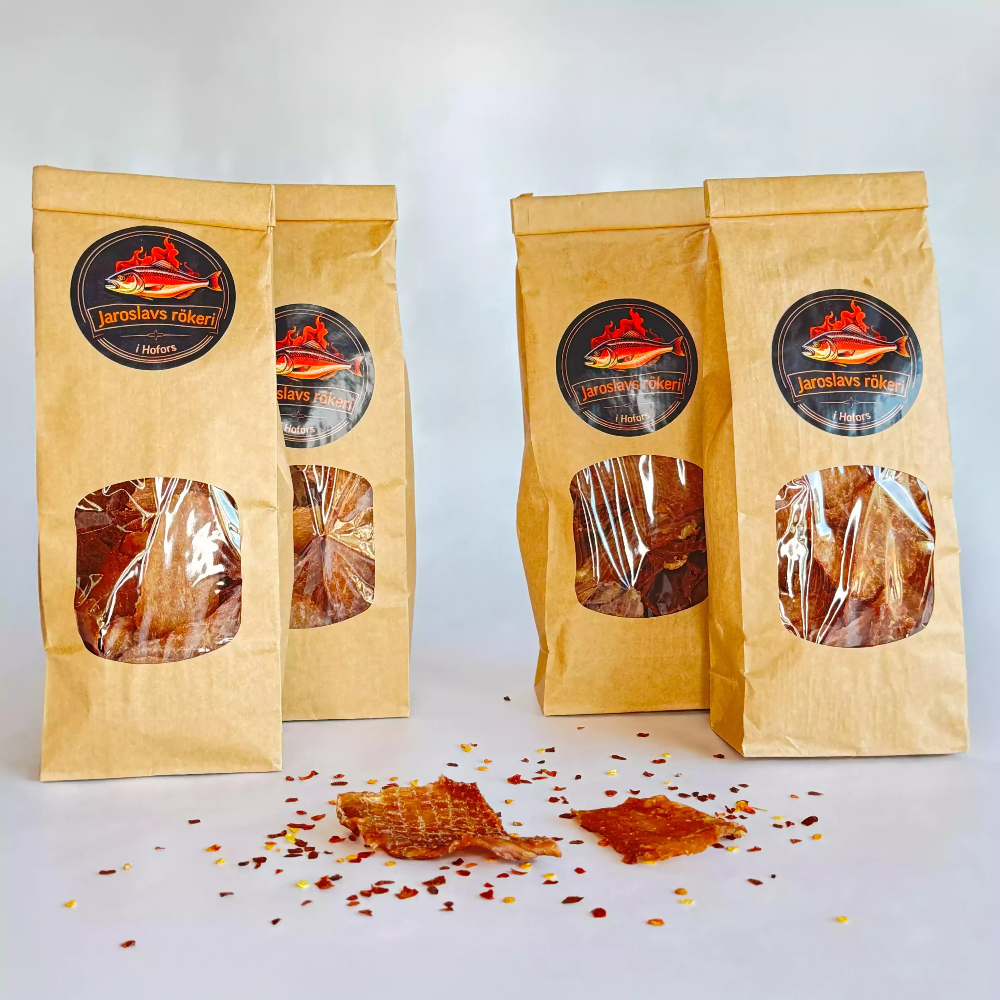

Fläskjerky
Fläskjerky – torkat och krispigt Tunt skuret fläskkött som marineras, torkas långsamt och röks varsamt. Resultatet blir torra, krispiga bitar med intensiv smak. Ett proteinrikt snacks – perfekt på språng eller när du vill unna dig något annorlunda.
Innehåll:
Vilkt: 100 g(1fp.)
100 g